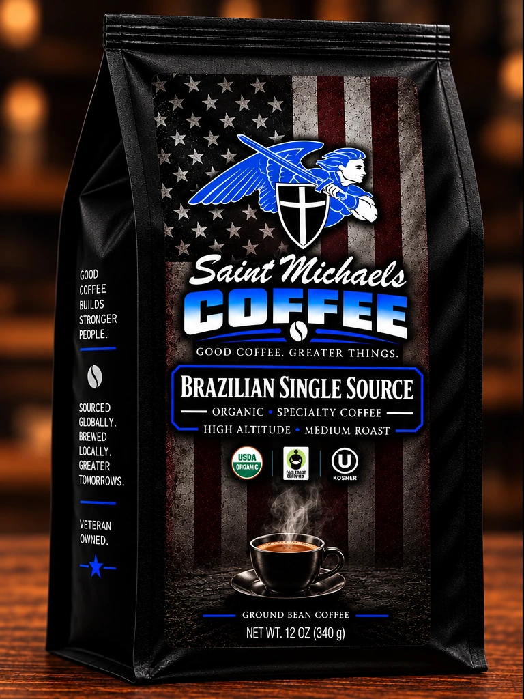
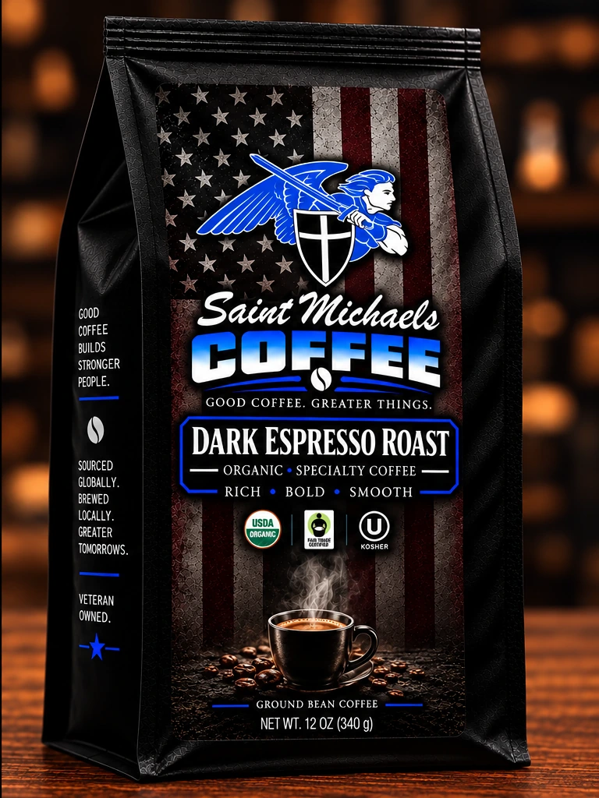
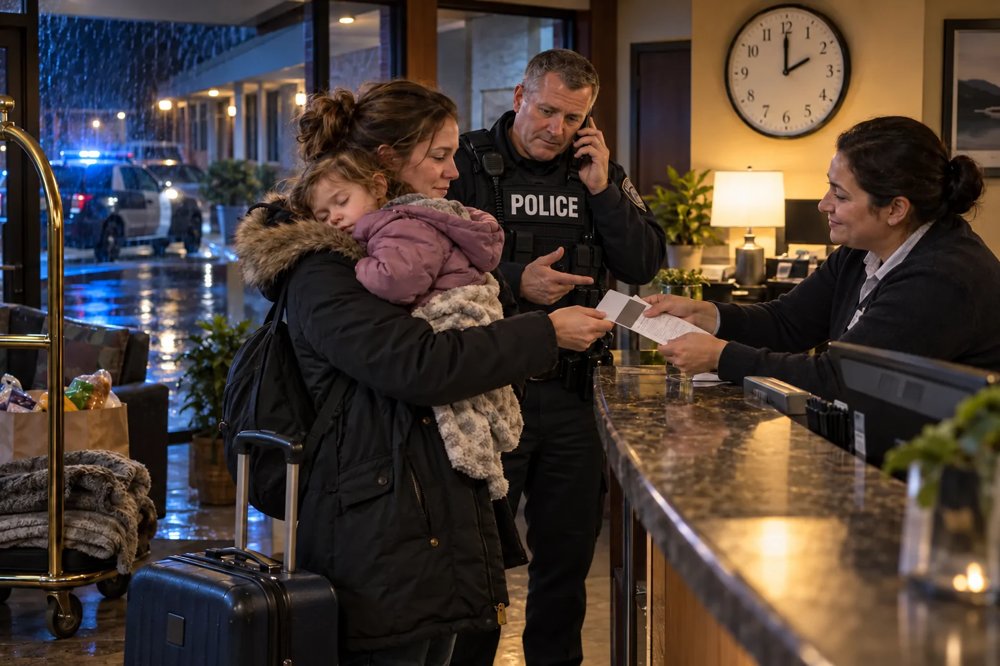

Veteran and Law Enforcement Owned
Good Coffee.
Good Coffee.
Greater Purpose.
First Through the Door.
First Cup of the Day.
For those who run toward danger — and everyone who stands behind them.
Then I heard the voice of the Lord saying, “Whom shall I send? And who will go for us?” And I said, “Here I am. Send me.”Isaiah 6:8
The Saint Michaels Collection
Good Coffee. Greater Things.
One mission. Built for real hours.

Our launch coffee is being carefully selected. Every bag will help support the mission behind the name.
Different Uniforms. The Same Heart.
Coffee for those who go first — and everyone who stands behind them.


Join The Community
Stand With Us
Join the Saint Michaels Coffee Founders List for launch updates, early ordering access, and an exclusive pre-launch offer.
The Saint Michaels Foundation
Help When It Matters Most
Officers, firefighters, and EMTs are often the first to see someone facing an urgent need. One call can help provide a safe room, groceries, clothing, transportation, or other immediate assistance—without waiting weeks for an answer.
Learn More About The Foundation
Who Saint Michael Is
The Patron Saint Of The Ones Who Go First
Saint Michael the Archangel is the protector — the warrior every uniform already knows. Patron saint of law enforcement, of the military, of the airborne. His medal rides in patrol car visors, tucked behind plate carriers, pressed into a paratrooper's hand before the jump. When everything else gives way, he is the last thing standing between order and chaos. Sword drawn. Shield up. Feet planted.
This name wasn't borrowed. It was handed down — and now it's ours to carry, and ours to honor.
Read The Full Story
For Those Who Run Toward Danger.
And everyone who stands behind them.
Military
For those who serve.
A life of service reaches far beyond a uniform. This cup is for the commitment you carry home.
Police
For those who go first.
For the early starts, the long nights, and the people who answer when someone needs help.
First Responders
For those who answer.
Firefighters, medics, dispatchers. Different roles. The same willingness to show up.

Families
And everyone behind them.
The quiet goodbyes. The people waiting at home. The neighbors who care. You belong here, too.
1 of 4Choose a story or swipe
Why Our Coffee
Made For The Third Cup At 3 A.M.
Premium coffee without the vocabulary test. Tell us how bold you like it and we'll tell you which bag to buy.
Small-Batch Roasted
Built For Real Hours
Every Bag Funds The Mission